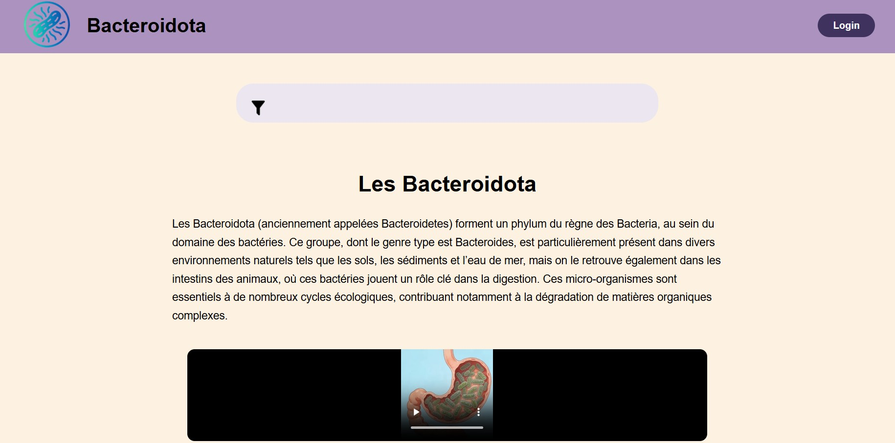

PROJETS / 01 · DÉVELOPPEMENT WEB
Bacteroidota
Un site web en PHP sur les Bacteroidota, réalisé en une semaine dans le cadre de la SAÉ 203.
← Retour à tous les projets
01 / DÉVELOPPEMENT WEBMON RÔLE
Conception et développement du site, de la structure des pages au code PHP.
OUTILS & TECHNIQUES
PHP · HTML · CSS · Images et vidéos générées avec l'IA Doubao
À PROPOS DU PROJET
Projet pédagogique réalisé en janvier 2026 dans le cadre de la SAÉ 203. Chaque étudiant avait un sujet différent : le mien portait sur les Bacteroidota, un groupe de bactéries. Nous avions une semaine pour tout réaliser, du contenu au développement. Les images et les vidéos du site ont été générées avec l'IA Doubao. C'est l'un des plus grands projets que j'ai menés jusqu'ici. Le site n'est pas parfait, mais ce projet m'a beaucoup appris, notamment en PHP et sur l'organisation d'un travail avec un délai aussi court.